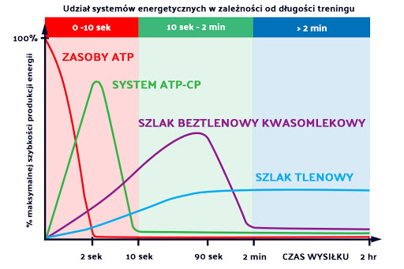

|

|
|---|
Mięsień (łac. musculus) – kurczliwy narząd, jeden ze strukturalnych i funkcjonalnych elementów narządu ruchu, stanowiący jego element czynny. Jego kształt i budowa zależy od roli pełnionej w organizmie.Mięśnie zbudowane są z tkanki mięśniowej. Połączone z elementami szkieletu, w wyniku skurczów mięśniowych kurczą się i rozkurczają, powodując ruchy poszczególnych elementów szkieletu względem siebie. Źródłem energii, z którego korzysta mięsień, jest zmagazynowany w nim glikogen lub glukoza dostarczona przez krew. Działanie mięśni uzależnione jest od oporu stawianego przez szkielet (hydrostatyczny lub twardy). Liczba mięśni człowieka jest określana na 450–500. U mężczyzn mięśnie stanowią około 40% masy ciała, a u kobiet około 35%
Mięśnie możemy podzielić na:
-głądkie
-poprzecznie prążkowane.
Mięśnie gładkie
to takie mięsnie którymi nie możemy sterować z własnej woli, np. mięsnie
w naczyniach krwionośnych czy w układzie pokarmowym.
Mięśnie
poprzecznie prążkowane
to takie który możemy sterować i je napinać, wszystkie mięsnie
szkieletowe, np mięsnie twarzy.
Nazwa pochodzi od ułożenia się w mięsniu reguralnie włokien mięsniowych
które w obrazie pod mikroskopem dają obraz prążkowany.
Skurcz koncentryczny występuje gdy mamy napięcie mięśniowe i długość
mięsienia się skraca.
W życiu codziennym gdy podnosisz kubek z kawą, pracuje biceps.
Skurcz izometryczny występuje gdy mamy napięcie mięśniowe i długość
mięsie nia się nie zmienia.
W życiu codziennym gdy chcesz otowrzyć słoik a on ani drgnie, mięśnie
przedramion napięte maksymalnie ale ruchu nie ma.
Skurcz ekscentryczny występuje gdy mamy napięcie mięśniowe i długość
mięsienia się wydłuża.
W życiu codziennym gdy siadasz na krześle, mięsnie czworogłowe się
rozciągaja ale pracują.
Mięsnie szkieletowe(poprzecznie prążkowane) możemy podzielić na dwa
typy.
Włokna mięśniowe typu I to włokna czerwone,
wolnokurczliwe. Włokna te charakteryzują się długim czasem pracy,
mają odcień czerwony ponieważ posiadają duża ilość mioglobiny, białka
które jest odpowiedzialne za magazynowanie tlenu w komurkach mięsni.
Włókna typu IIa i IIb to włokna białe ,
szybkokurczliwe. Włokna te charakteryzują się krótkim czasem pracy od 2
min.
ATP -> ATP-PC -> kwas mlekowy -> utlenianie kwasów tłuszczowych

|
|
|
|---|
| Klatka piersiowa i brzuch | Kończyna górna przód | Kończyna górna tył | Plecy | Kończyna dolna przód | Kończyna dolna tył |
|---|---|---|---|---|---|
|
- m. Piersiowy większy - m. Piersiowy mniejszy - m. Zębaty przedni - m. Prosty brzucha - m. Skośny Zewnętrzny i wewnętrzny - m. Poprzeczny brzucha |
- m. Naramienny przedni akton - m. Dwugłowy ramienia (biceps) - m. Ramienny - m. Zginacze palców |
- m. Naramienny tylni akton - m. Trójgłowy ramienia (triceps) - m. Prostowniki palców |
- m. Czworoboczny - m. Równoległoboczny - m. Obły większy - m. Najszerszy grzbietu - m. Prostowniki grzbietu |
- m. Czworogłowy - m. Krawiecki - m. przywodziciele uda - m. Piszczelowy przedni - m. Strzałkowy długi |
- m. Pośladkowy wielki - m. Pośladkowy średni - m. Pośladkowy mały - m. Dwugłowy uda - m. Półścięgnisty - m. Półbłoniasty - m. Brzuchaty łydki - m. Płaszczkowaty łydki |
| Pompki/Wyciskanie leżąc |
- m. Piersiowy większy - m. Naramienny przedni akton - m. Trójgłowy ramienia (triceps) |
|---|---|
| Przysiady |
- m. Czworogłowy - m. Pośladkowy wielki - m. Prostowniki grzbietu |
| Podciąganie na drążku |
- m. Najszerszy grzbietu - m. Czworoboczny - m. Równoległoboczny - m. Dwugłowy ramienia (biceps) |
| Martwy ciąg |
- m. Prostowniki grzbietu - m. Czworogłowy - m. Pośladkowy wielki - m. Dwugłowy uda |
Należy stopniowo przeciążać mięśnie, zwiększać ciężary, liczbę serii i częstotliwość treningów.
Założeniem tej zasady jest wykonywanie kilku serii na daną grupę mięśniową, aby maksymalnie wyczerpać mięsnie i wywołać maksymalny rozrost włokien mięśniowych, tzw. hipertrofię.
W każdym ćwiczeniu mięsnie mogą pracować w połączeniu lub izolacji. Celem kulturystyki jest budowanie i kształtowanie poszczególnych grup mięśniowych. A zatem należy dany mięsień w możliwie najskuteczniejszy sposób odizolować od wpływu mięśni sąsiadujących.
Aby rozwijać mięsień należy go zaskakiwać poprzez zmianę paraetrów treningowych: rodzaje ćwiczeń, liczba serii, liczba powtórzeń, kąty pod jakimi działają siły.
Zasada polega na tym aby na początku treningu zacząć od mięsni najsłabiej rozwiniętych, kiedy zasoby energetyczne są największe.
Zasda została opracowana aby rozwiązać problem dużego ryzyka kontuzji. Chodzi w niej o to aby zacząć od mniejszych cieżarów (60%CM) i sopniowo zwiększać ciężar z każdą serią.
Zasada treningu dzielonego spowoduje zwiększyć liczbę wykonywanych serii na daną partię mieśniową, a co za tym idzie spowoduje to zwiększenie intensuwności ćwiczeń.
Aby wywołać rozrost mięśni należy spowodować napływ krwi do trenowanych mięśni. Maksymalne dokrwienie mięśni powoduje zwiększony napływ składników odżywczych oraz szybsze wypłukiwanie szkodliwych produktów przemiany materii, dzięki czemu komórki mają lepsze warunki do rozrostu. Zastosowanie poprzez wykonywanie 3-4 ćwiczeń bez przerwy na daną partię mieśniową.
Jest to najbardziej znana metoda wg Joe. Super seria polega na łączeniu dwóch ćwiczeń na przeciwstawne grupy mięśniowe. Superserie przyśpieszają ogólną regenerację organizmu.
Łączymy dwa ćwiczenia na tą samą grupę mięsniową. Serie te jak i wyżej, wykorzystujemy w celu maksymalnego napompowania krwią mięśni.
Główna ideą treningu holistycznego jest maksymalny przyrost całej komurki mięśniowej. Aby to dokonać trzeba wykonywać serie o różnej liczbie powtórzeń i różnym obciążeniu. Od małego ciężaru do dużego oraz od dużej liczby powtórzeń do małej.
Planowanie roczne treningu powinno mieć charakter falowy. W praktyce różnicujemy treningi na masę, siłe czy redukcję. Każda z metod treningowych powinna mieć miejsce w planowaniu.
Trening izometryczny to napinanie mięśni bez ich skrócenia. W maksymalnym skurczu zatrzymujemy na 3 do 6 sekund. Procedurę tę powtarzamy trzy razy. Stosowanie tej metody ma pomóć w lepszej separacji mięśni w trakcie pozowania na zawodach.
Serie potrójne jest to łączenie 3 ćwiczeń na tą samą grupę mięśniową, stosujemy w celu maksymalnego dokrwienia mięśnia.
Gigant seria składa się z 4-6 ćwiczeń na daną grupę. wykonujemy ćwiczenia pod róznymi kątami aby maksymalnie zmęczyć daną partię mieśniową, stosujemy minimalne przerwy .
Wykonujemy wyizolowane ćwiczenie na daną grupę mięśniową a natychmiast po przechodzimi do podstawowego ćwiczenia. Taka kolejność chroni mięśnie pomocnicze przed wyczerpaniem, zanim zmęczeniu ulegnie duża grupa mięśni.
Stosując tę zasadę, należy ćwiczyć z ciężarem submaksymalnym, aby móc wykonać 2-3 powtórzenia. Następnie trzeba odpocząć przez 30-40s, kontynuować 2-3 pow, odpocząć 40-60 s, wykonać kolejne 2 powtórzenia i odpocząć 60-90 s. i zakończyć 1-2 pow. Zastosowanie tej zasady(metody) daje wzrost siły i objętości mięśnia.
Jest to metoda, dzięki której można utrzymywać ćwiczony mięsień w pełnym napięciu w momencie, gdy znajduje się on w fazie maksymalnego skurczu.
Ćwiczony mięsięń ma być zmuszony do pracy w całej jego długości. Wykonujemy ćwiczenie w czysty techniczny sposób, kontrolujemy ruch koncentryczny oraz ekscentryczny.
Stawianie oporu siłom grawitacyjnym w trakcie przesuwania się ciężaru do dołu jest bardzo intensywną formą ćwiczeń, powodującą znaczne zmęczenie mięśni i wspaniale wpływającą na pobudzanie mięśni do maksymalnego rozrostu. Trening z zastosowaniem oporu w ruchu wstecznym, zwany inaczej negatywnymi powtórzeniami, może być tylko okresowo włączany do programów treningowych.
Jest to bardzo intensywna metoda ćwiczeń i wielu kulturystów popada w przetrenowanie, gdy zbyt często zaczynają stosować wymuszone powtórzenia. Wymuszone powtórzenia mobilizują włókna mięśniowe do pracy w zakresie wybiegającym poza normalne zmęczenie, co stymuluje jeszcze większy rozwój i wzrost gęstości mięśni.
Wielu kulturystów ćwiczy obecnie tylko jedną lub dwie grupy mięśniowe na porannym treningu, wracając do siłowni późnym popołudniem lub wieczorem i ćwicząc jedną lub dwie następne grupy mięśniowe. Ćwicząc jedną lub dwie grupy mięśniowe na jednej sesji treningowej, można poświęcić im całą energię, wykonując więcej serii i z większymi obciążeniami. Przez to wpływa się silniej na stymulację rozrostu mięśni.
Kilku mistrzów kulturystyki charakteryzuje się tak szybką regeneracją organizmu, że - z powodów podanych powyżej - korzystne jest dla nich trenowanie trzy razy dziennie i wykonywanie ćwiczeń tylko na jedną grupę mięśniową na każdej sesji.
Jeśli na zakończenie normalnej serii wykonacie jeszcze dodatkowo 2 – 3 krótkie, niepełne powtórzenia, spowoduje to zwiększony napływ krwi do mięśni i wydzielenie się kwasu mlekowego. Ów kwas mlekowy wywoła nieprzyjemne uczucie palenia wewnątrz mięśni. Od strony fizjologicznej, produkty powstające w wyniku przemęczenia mięśni oraz dokrwienie wywołane tymi dodatkowymi, niepełnymi powtórzeniami powodują nabrzmienie komórek oraz rozmnażanie się naczyń włosowatych. Wszystko to oddziałuje na powiększenie objętości mięśnia i rozbudowę jego naczyń krwionośnych.
Trening jakościowy oznacza, że stopniowo skraca się przerwy odpoczynkowe pomiędzy seriami, próbując nadal wykonywać tę samą, co poprzednio lub nawet większą liczbę powtórzeń w seriach. Trening jakościowy, zwany też przedstartowym, jest świetną metodą na poprawienie definicji i unaczynienia mięśni.
Metoda ta zwana zwana potocznie „zdejmowaniem”. System ten wymaga pomocy partnera, który zdejmują obciążniki z obu stron sztangi, gdy nie jesteś już w stanie wykonać kolejnego powtórzenia pierwotnie założonym ciężarem. Ciężar sztangi maleje wtedy, co umożliwia wykonanie kolejnych paru powtórzeń, przez co seria może być przedłużona. Jest to metoda pozwalająca na zwiększenie intensywności ćwiczeń w każdej serii, ale jest to również bardzo ciężka praca, dlatego też nie powinniście stosować tej techniki w więcej niż 1 – 2 ćwiczeniach w trakcie pojedynczej sesji treningowej.
Tylko samemu można poznać, co najskuteczniej oddziałuje na nasz organizm. Każdy kulturysta musi opanować sztukę układania programów treningowych, dobierania ćwiczeń oraz ustalania liczby serii i powtórzeń, które w jego przypadku dają najlepsze rezultaty.
Zasada ta polega na połączeniu ćwiczeń na budowę masy mięśniowej z wyizolowanymi ćwiczeniami, wpływającymi na jakość i separację mięśni, w jeden specjalny program treningowy. Oznacza to, że z pośród różnych ćwiczeń i zasad treningowych wybieracie te, które najlepiej zdają egzamin w waszym systemie.
Niepełne powtórzenia w ćwiczeniach podstawowych zarówno w początkowej, środkowej, jaki i w końcowej fazie ruchu, mogą być wykorzystywane, jako środek prowadzący do wzrostu siły fizycznej i masy mięśniowej.
Zasada ta polega na umyślnym przyśpieszaniu ruchu, ale tylko w przypadku serii z dużym ciężarem. Jest to próba poprawienia dynamiki i siły mięśni poprzez pobudzenie większej ilości włókien białych.
Zasada ta polega na wplatanie w trening dodatkowych serii na partie najbardziej "oporne", takie jak kark, łydki, przedramiona, kaptury. Pozwoli to na wyrównianie słabszych mięśni.